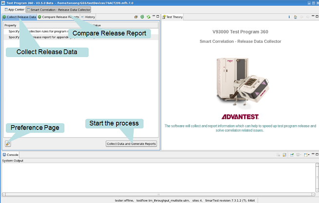

Smart Correlation - Release Data Collector
The Smart Correlation - Release Data Collector is a tool to automate the data collection of the test program release.
Using the Smart Correlation - Release Data Collector, you can define data collection rules for sample correlations. The tool can automatically collect the log data of the selected rules. It supports an incremental collection of the release data and the current tester configuration. It generates a comprehensive release report for sample correlation. The tool can also be used to compare release reports - useful for troubleshooting.
There are two functions in this module:
Select the associated tab to go to the required function.
The History tab provides access to recently-created reports.

Functional changes
- Introduced in SmarTest 7.3.2